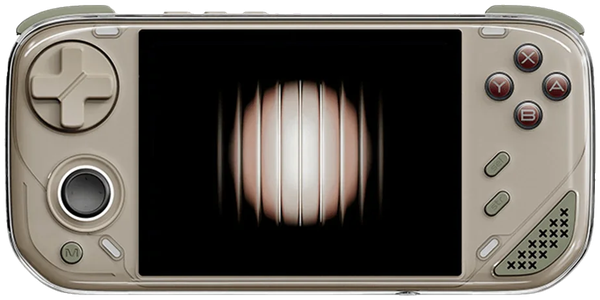

MiniLoong Pocket 1
RG OS runs on the MiniLoong Pocket 1, a Rockchip RK3566 handheld with a 4" 960x720 (4:3) screen and a single analog stick.

| Argument | miniloong |
| SoC | Rockchip RK3566, 1 GB RAM |
| Screen | 4", 960x720 (4:3) |
| Sticks | one analog stick (left) |
| Base image | AURKNIX-RK3566.aarch64-<tag>-Specific.img.gz from AveyondFly/distribution_rocknix (default tag 20260809) |
| Partition table | MBR; ROMS is created on first boot as partition 3 |
Build
sudo ./build.sh miniloong # SD card image -> out/miniloong-rgos.img
sudo ./build.sh miniloong installer # first-boot installer image
sudo ./build.sh miniloong update # offline update tar
Options: ROCKNIX_RK3566_VERSION=<release tag>,
MINILOONG_DTB=<name without .dtb> (default
miniloong) and ROCKNIX_URL=<image .img.gz>.
See BUILDING.md.
How it boots
The Rockchip image selects its device tree with the
FDT line of extlinux/extlinux.conf. The
build finds miniloong.dtb on the stock boot partition,
points that line at it, then applies the normal RG OS initramfs
patch. The Android on the internal storage is not touched; the
Pocket 1 boots the card.
Differences from the H700 consoles
- No
dtb.img, no DDR3/DDR4 choice, no panel revision choice. -
One stick:
input-miniloong.jsonhas"sticks": 1. The input hub publishes only the left stick, the PortMaster/SDL mapping has no right stick, and the button mapper skips R3 and the right stick calibration. See CONTROLS.md. -
Menu and installer use the 720x540 layout (exact 4:3), scaled to
960x720. RetroArch uses
config/retroarch-miniloong.cfg. - Mini-HDMI is not covered; HDMI.md is H700 only.
- Offline updates may carry
miniloong.dtbordevice_trees/miniloong.dtb. - No GameCube core (RG Rotate only).
Status
Support is new. If the screen stays black, see TROUBLESHOOTING.md.